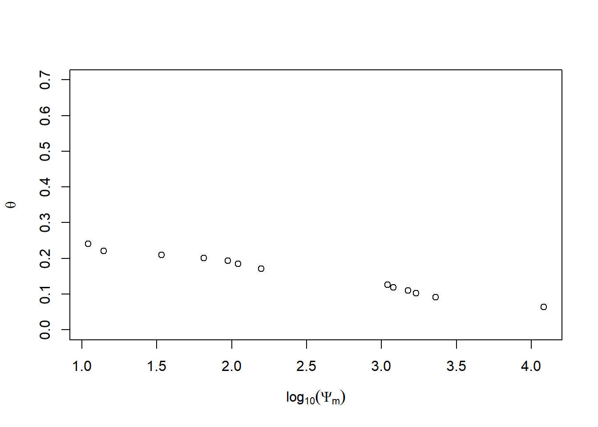

9 Acesso a bancos de dados climáticos
9.1 Precipitação com o pacote hydroTSM
Tutorial do HydroTSM - http://goo.gl/9u1PO
Instalação
Carregar o pacote
## Loading required package: xts##
## Attaching package: 'xts'## The following objects are masked from 'package:dplyr':
##
## first, last##
## Attaching package: 'hydroTSM'## The following object is masked from 'package:tidyr':
##
## extractCarregando dados diários de Precipitação da estação de Rondonópolis-MT, com dados de 01 de janeiro de 1980 a 31 de dezembro de 2013
Selecionar somente 5 anos da serie
Valores de Precipitação mensal
## 2009-01-01 2009-02-01 2009-03-01 2009-04-01 2009-05-01 2009-06-01 2009-07-01
## 200.17 340.88 312.69 161.13 32.76 66.03 19.83
## 2009-08-01 2009-09-01 2009-10-01 2009-11-01 2009-12-01 2010-01-01 2010-02-01
## 77.99 131.10 127.09 258.52 344.81 339.07 365.16
## 2010-03-01 2010-04-01 2010-05-01 2010-06-01 2010-07-01 2010-08-01 2010-09-01
## 247.46 129.92 14.29 0.22 0.49 0.00 0.62
## 2010-10-01 2010-11-01 2010-12-01 2011-01-01 2011-02-01 2011-03-01 2011-04-01
## 143.24 181.52 206.55 418.55 419.73 537.55 146.77
## 2011-05-01 2011-06-01 2011-07-01 2011-08-01 2011-09-01 2011-10-01 2011-11-01
## 10.42 8.89 0.00 4.34 10.00 212.64 105.84
## 2011-12-01 2012-01-01 2012-02-01 2012-03-01 2012-04-01 2012-05-01 2012-06-01
## 348.87 437.63 256.04 248.56 169.66 115.69 135.74
## 2012-07-01 2012-08-01 2012-09-01 2012-10-01 2012-11-01 2012-12-01 2013-01-01
## 0.15 0.00 82.56 93.41 310.81 158.77 349.01
## 2013-02-01 2013-03-01 2013-04-01 2013-05-01 2013-06-01 2013-07-01 2013-08-01
## 325.68 287.80 135.50 44.85 37.29 19.11 0.00
## 2013-09-01 2013-10-01 2013-11-01 2013-12-01
## 61.70 82.57 151.95 222.90Datas dos valores diários de “x”
Quantidade de anos em ‘x’ (necessário para cálculos)
## [1] 5Análise exploratórios do dados
Resumo estatástico
## Index x
## Min. 2009-01-01 0.0000
## 1st Qu. 2010-04-02 0.0000
## Median 2011-07-02 0.5300
## Mean 2011-07-02 5.2860
## 3rd Qu. 2012-09-30 7.3950
## Max. 2013-12-31 63.3500
## IQR <NA> 7.3950
## sd <NA> 8.9907
## cv <NA> 1.7008
## Skewness <NA> 2.5413
## Kurtosis <NA> 7.6836
## NA's <NA> 0.0000
## n <NA> 1826.0000Usando a função hydroplot, que (por padrão) representa 9 gráficos diferentes: gráficos de 3 ts, 3 gráficos de caixa e 3 histogramas com um resumo “x”. Para este exemplo, somente plotagens diárias e mensais são produzidas e apenas os dados iniciados em 01 de janeiro de 2009 são plotados.

Quantidade de dias com informação (não NA) por ano
## 2009 2010 2011 2012 2013
## 365 365 365 366 365Quantidade de dias com informação (não NA) por mês por ano
## Jan Feb Mar Apr May Jun Jul Aug Sep Oct Nov Dec
## 2009 31 28 31 30 31 30 31 31 30 31 30 31
## 2010 31 28 31 30 31 30 31 31 30 31 30 31
## 2011 31 28 31 30 31 30 31 31 30 31 30 31
## 2012 31 29 31 30 31 30 31 31 30 31 30 31
## 2013 31 28 31 30 31 30 31 31 30 31 30 31Plotar os valores mensais de Precipitação para cada ano, para identificar meses secos / umidos.
# Daily zoo to monthly zoo
m <- daily2monthly(x, FUN=sum, na.rm=TRUE)
# Creating a matrix with monthly values per year in each column
M <- matrix(m, ncol=12, byrow=TRUE)
colnames(M) <- month.abb
rownames(M) <- unique(format(time(m), "%Y"))# Plotting the monthly precipitation values
require(lattice)
## Loading required package: lattice
print(matrixplot(M, ColorRamp="Precipitation",
main="Precipitação mensal de Rondonópolis-MT (mm/mês)"))
9.1.1 Análise anual dos dados
Valores anuais de Precipitação
## 2009-01-01 2010-01-01 2011-01-01 2012-01-01 2013-01-01
## 2073.00 1628.54 2223.60 2009.02 1718.36Precipitação Média anual
## [1] 1930.504Outra forma (mais útil para ‘streamflows’, onde FUN = mean): A função anual aplica FUN duas vezes sobre x:
- primeiramente, sobre todos os elementos de x pertencentes ao mesmo ano, para obter os correspondentes valores anuais, e
- em segundo lugar, acima de todos os valores anuais de x obtidos anteriormente, a fim de obter um único valor anual.
## value
## 1930.5049.1.2 Análise mensal dos dados - BOXPLOT
Mediana dos valores mensais na estação de Rondonópolis-MT.
## Jan Feb Mar Apr May Jun Jul Aug Sep Oct Nov
## 349.01 340.88 287.80 146.77 32.76 37.29 0.49 0.00 61.70 127.09 181.52
## Dec
## 222.90Vetor com as abreviaturas de três letras para os nomes dos meses
Criando fatores mensais ordenados
Boxplot dos valores mensais
boxplot( coredata(m) ~ months,
col="lightblue",
main="Precipitação mensal de Rondonpolis,MT",
ylab="Precipitação (mm)", xlab="Mensal")
9.1.3 Análise sazonal
Valores sazonais médios de Precipitação
## DJF MAM JJA SON
## 946.764 519.010 74.016 390.714Extraindo os valores sazonais para cada ano
Dezembro, Janeiro e Fevereiro
## 2009 2010 2011 2012 2013
## 541.05 1049.04 1044.83 1042.54 833.46Março, Abril e Maio
## 2009 2010 2011 2012 2013
## 506.58 391.67 694.74 533.91 468.15Junho, Julho e Agosto
## 2009 2010 2011 2012 2013
## 163.85 0.71 13.23 135.89 56.40Setembro, Outubro e Novembro
## 2009 2010 2011 2012 2013
## 516.71 325.38 328.48 486.78 296.22Plotar a evolução temporal dos valores da Precipitação sazonal
9.1.4 Alguns índices extremos
Etapas comuns para a análise desta serie:
Carregando dados diários de Precipitação da estação Rondonópolis-MT, com dados de 01/Jan/1980 a 31/Dez/2013.
## Warning in data(roo): data set 'roo' not foundSelecionar a data inicial
Plotar a série temporal selecionada

Contagem e plotagem do número de dias no período em que a Precipitação foi maior que 80 mm.
## [1] 49.1.5 Precipitaçao total chuva
Calculando a Precipitação total (acumulada) de 5 dias
x.5max <- rollapply(data=x, width=5, FUN=sum, fill=NA, partial= TRUE,
align="center")
hydroplot(x.5max, ptype="ts+boxplot", pfreq="o", var.unit="mm")## [Note: pfreq='o' => ptype has been changed to 'ts']
Valor anual máximo de Precipitação total em 5 dias
## 1980-01-01 1981-01-01 1982-01-01 1983-01-01 1984-01-01 1985-01-01 1986-01-01
## 160.54 90.51 85.49 132.81 120.78 141.33 99.98
## 1987-01-01 1988-01-01 1989-01-01 1990-01-01 1991-01-01 1992-01-01 1993-01-01
## 123.58 171.03 163.45 86.39 120.82 111.70 177.09
## 1994-01-01 1995-01-01 1996-01-01 1997-01-01 1998-01-01 1999-01-01 2000-01-01
## 121.09 158.35 149.88 167.91 135.63 122.16 98.53
## 2001-01-01 2002-01-01 2003-01-01 2004-01-01 2005-01-01 2006-01-01 2007-01-01
## 124.10 115.52 108.61 81.14 117.21 94.05 98.69
## 2008-01-01 2009-01-01 2010-01-01 2011-01-01 2012-01-01 2013-01-01
## 151.72 164.22 128.46 174.28 170.24 131.61Nota 1: para este cálculo, é utilizada uma janela móvel centrada no dia atual. Se o usuário quiser Precipitação total de 5 dias acumulada nos 4 dias anteriores ao dia atual + a Precipitação no corrente dia, o usuário tem que modificar a janela móvel.
Nota 2: Para os dois primeiros e os últimos dois valores, a largura da janela é adaptada para ignorar valores a série temporal